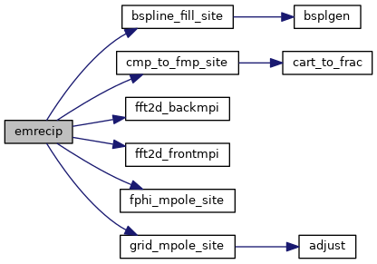
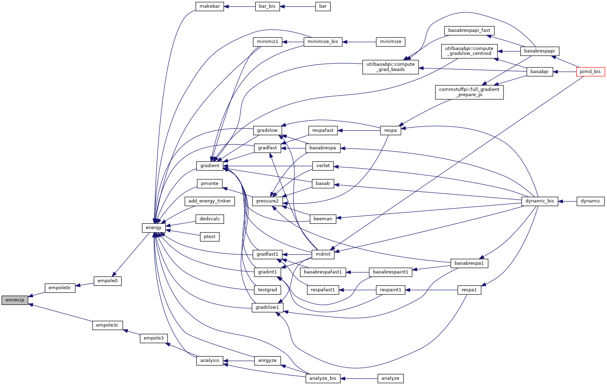

|
Tinker-HP v1.3
|
|
Tinker-HP v1.3
|
Go to the source code of this file.
Functions/Subroutines | |
| subroutine | emrecip |
| evaluates the reciprocal space portion of the particle mesh Ewald energy due to atomic multipole interactions More... | |
| subroutine emrecip | ( | ) |
evaluates the reciprocal space portion of the particle mesh Ewald energy due to atomic multipole interactions
| no | params |
Definition at line 32 of file empole.f90.
References bspline_fill_site(), cmp_to_fmp_site(), fft2d_backmpi(), fft2d_frontmpi(), fphi_mpole_site(), and grid_mpole_site().
Referenced by empole0c(), and empole3c().


 1.8.5
1.8.5